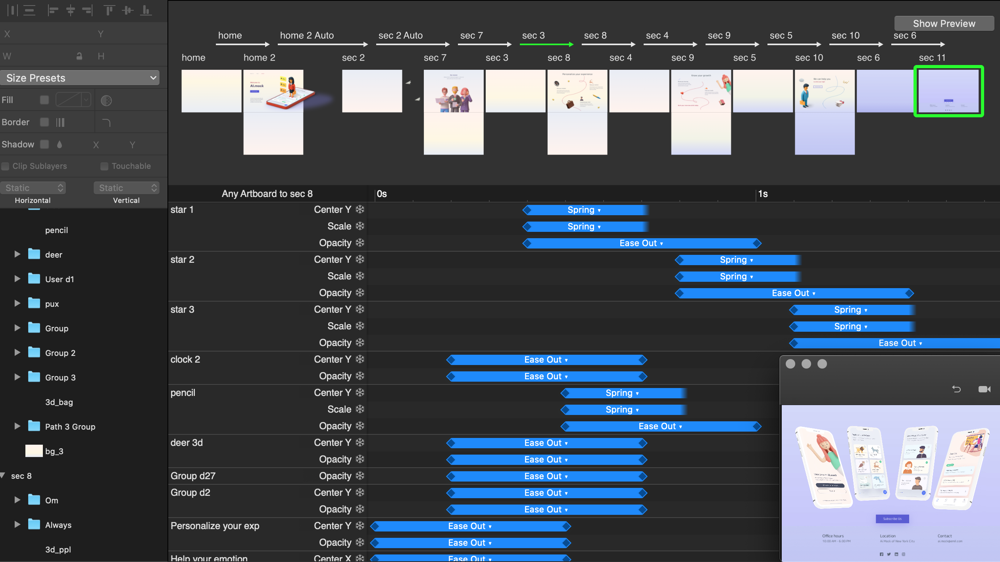
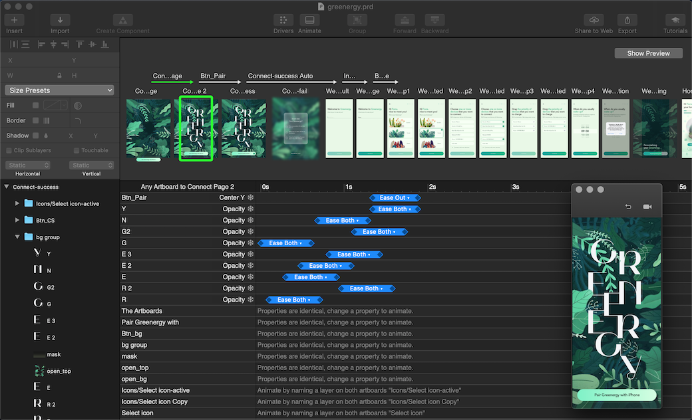

Motion Design and Interative Prototypes
Archive Portfolio Digital Documentary
Design Scope:
- Landing page: embedded animation.
- Introduction page: three carousel slides.
- Works page: vertical scrolling design.
Software Used:
- Sketch
- Principle
Typefaces & Logo:
- Primary: Playfair Display (Regular)
- Secondary: Avenir (Light, Medium)
Motion Approaches:
- Movement: parallel carousel and vertical scrolling.
- Features: loading indicator with the progress bar, transition pagination, and an active navigation.
- Animation dynamics: Ease-out, ease-in, and spring behaviors.
- Gestures: use the long press gesture to active the animated aperture.
- Shape transform: alternate aperture blades between open and closed with morphing effects.

Working process in Principle

Final design presentation
Motion Prototypes Video
Brand Portfolio Visual Identity
Design Scope:
- Product main page: displays three product items.
- Product detail pages: implemented a quick view mode.
- Product views: include front, side, and back views for various series.
Software Used:
- Sketch
- Principle
Typefaces & Logo:
- Primary: Nova Round (Book)
- Secondary: SF Pro Text (Regular, Semibold)
Motion Approaches:
- Movement: horizontal-scroll motion.
- Navigation: switches between pages via CTA buttons.
- Animation dynamics: ease-in and ease-both behaviors.
- Transition: multiple layer transformations with clipping and masking.
- Thumbnail: clickable image areas for product photo enlargement.

Working process in Principle

Final design presentation
Motion Prototypes Video
Social Media Publishing Platform
Design Scope:
- Landing page: features an embedded video.
- Article detail pages: display photography, introduction, relavant citing news and quotes.
Software Used:
- Sketch
- Principle
Typefaces & Logo:
- Primary: Playfair Display (Black)
- Secondary: Proxima Nova (Regular, Medium)
Motion Approaches:
- Navigation: applies text color variations dynamically to suit light and dark background modes.
- Animation dynamics: ease-in and ease-both behaviors.
- Transition: background resize and fade-out effects.
- Color theme: linear gradient application.
Readable Accessibility:
- Single-screen view: entire content visible and fits.

Working process in Principle

Final design presentation
Motion Prototypes Video
Product Strategy Education Portal
Design Scope:
- Hero section: introduces primary content with navigation and a prominent call-to-action button.
- Featured section: highlights the brand identity, key offerings, products, and services.
- Contact section: showcases a preview of the product demo alongside links to contact information and social media profiles.
Software Used:
- Sketch
- Principle
Typefaces & Logo:
- Rounded Mplus 1c (Regular, Medium)
- Varela Round (Regular)
Motion Approaches:
- Movement: vertical-scroll motion.
- Animation dynamics: linear, ease-out, ease-in, and spring behavior.
- Transition: multiple-layer transformations with clipping and masking effects.
- Stoke path: trim and reveal line transitions.
- 3D showcase: slow-motion animations featuring explosion effects for visual storytelling.


Working process in Principle
Final design presentation
Motion Prototypes Video
Dynamic Typography Animation
Design Scope:
- App landing page.
- Article detail pages: display photography, introduction, relavant citing news and quotes.
Software Used:
- Sketch
- Principle
Typefaces & Logo:
- Mak (Light)
Motion Approaches:
- Animation dynamics: linear, ease-out, and spring behaviors.
- Transition: multiple-layer transformations with clipping and masking effects.
- Time-delay: typography animation executed with latency.
- 3D showcase: display the front view of the product with a counterclockwise spin.

Working process in Principle
 |
 |
Final design presentation
Design Tools: Framer programming
For the interactive motion described below, I used Framer, an open-source JavaScript framework for both low- and high-fidelity prototyping. I designed the transitions, interactions, and animations of the elements in the user interface.

Previous And Next Button
Framer elements used:
- Import PSD file
- Border radius
- Layer centering
- Spring curve
- Layer states
- Text label style
- Tap event handlers
- Current state
- JavaScript methods
- Array push/pop
- If...else statement

Rotate Colors Carousel
Framer elements used:
- Border radius
- Parent siblings
- Layer centering
- Layer states
- Text label style
- Tap event handler
- Animate function
- Spring curve

Expanding Window Toggle
Framer elements used:
- Import PSD file
- Border radius
- Layer centering
- Layer states
- Border width
- Super layers
- Spring curve
- Mid X/Y placement
- Click event handlers

Settings Toggle Switch
Framer elements used:
- Import PSD file
- Border radius
- Layer centering
- Layer states
- Border color
- Super layers
- Ease curve
- Click event handlers

Input Search Bar
Framer elements used:
- Import PSD file
- Input module
- Virtual keyboard
- Placeholder color
- Input style of cursor